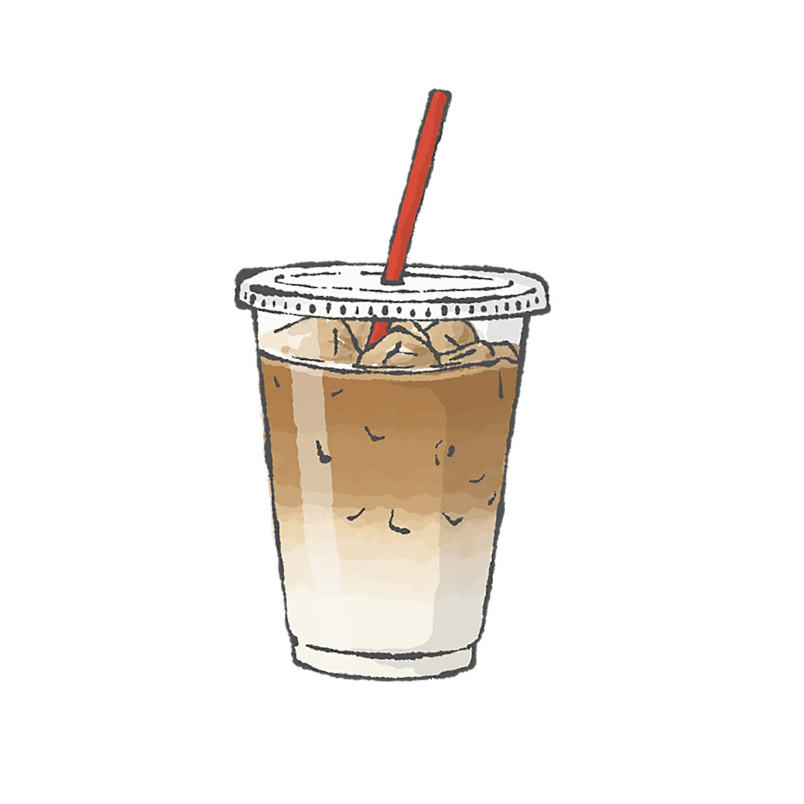
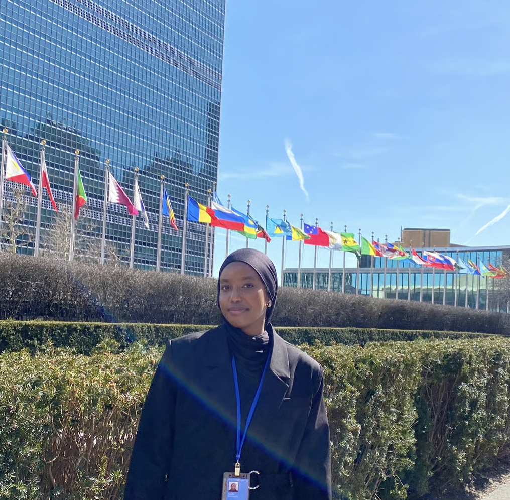

[asset_id: om meg]

Jeg er en UX designer
Jeg heter Radwa og er en UX designer og utvikler, både i studiet og på fritiden. Jeg er stor fan av å eksperimentere, lære noe nytt og gjøre git commit uten merge conflicts.
Jeg liker å utforske ideer i praksis og teste dem raskt og justere underveis. Det å samle innsikt fra mennesker, å forstå behovene først og så forme løsningen er det som motiverer meg mest.

Interesse
Når jeg ikke designer, finner du meg ofte med en gitar, en bok, et lerret eller en Nintendo Switch i hånda. Å utforske ulike former for kreativitet gir meg nye perspektiver også i arbeidet mitt.
05 øyeblikk





Engasjement
Delegat under FNs kvinnekommisjon (CSW) i New York, 2024 og 2025.
Der arbeidet jeg med likestilling, representasjon og unges stemmer i globale beslutningsprosesser. Det har styrket overbevisningen min om at design ikke bare handler om funksjon og estetikk, men også om påvirkning, tilgjengelighet og ansvar.